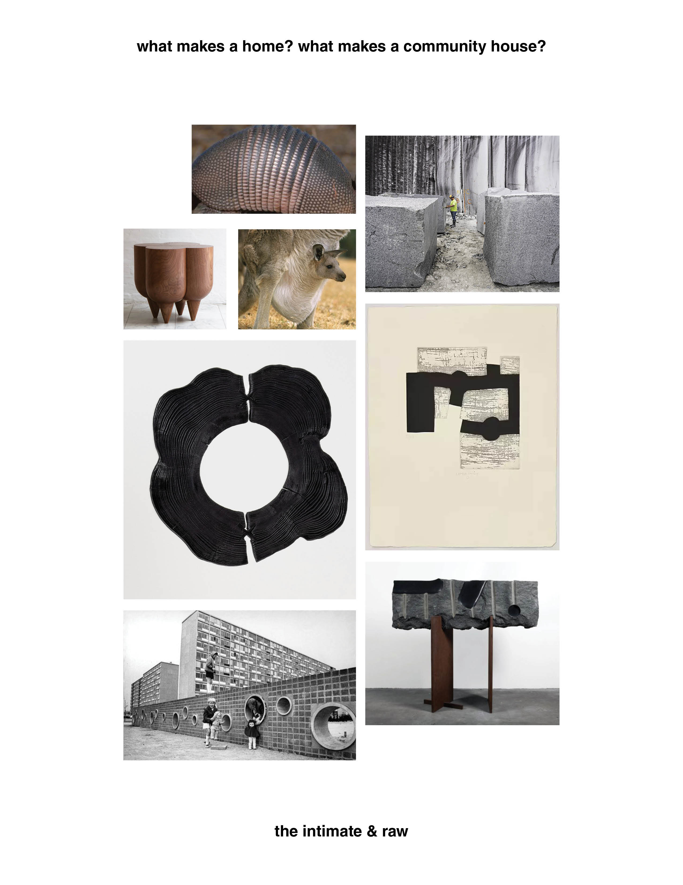
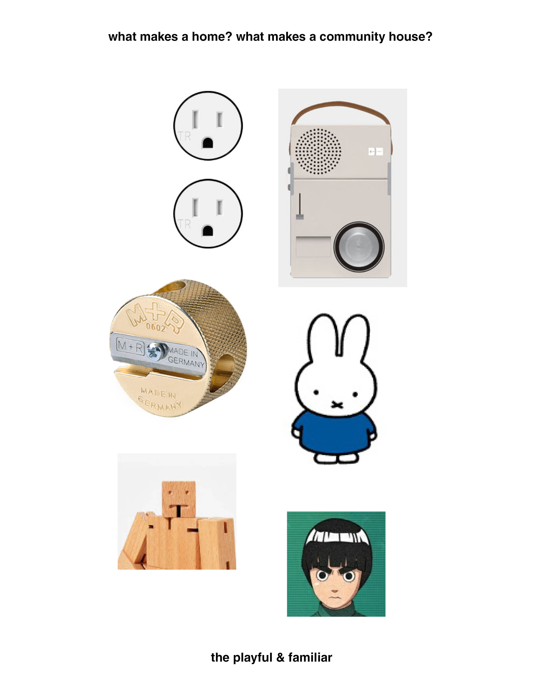
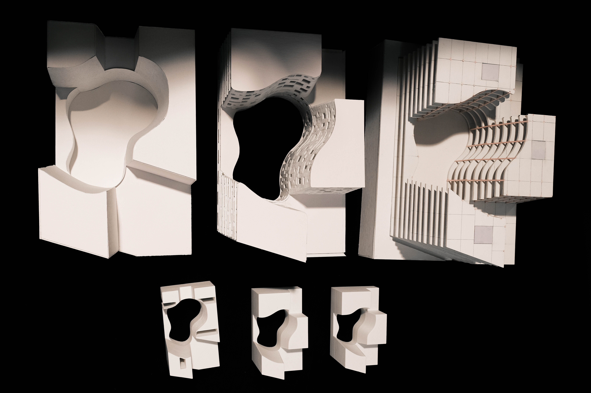
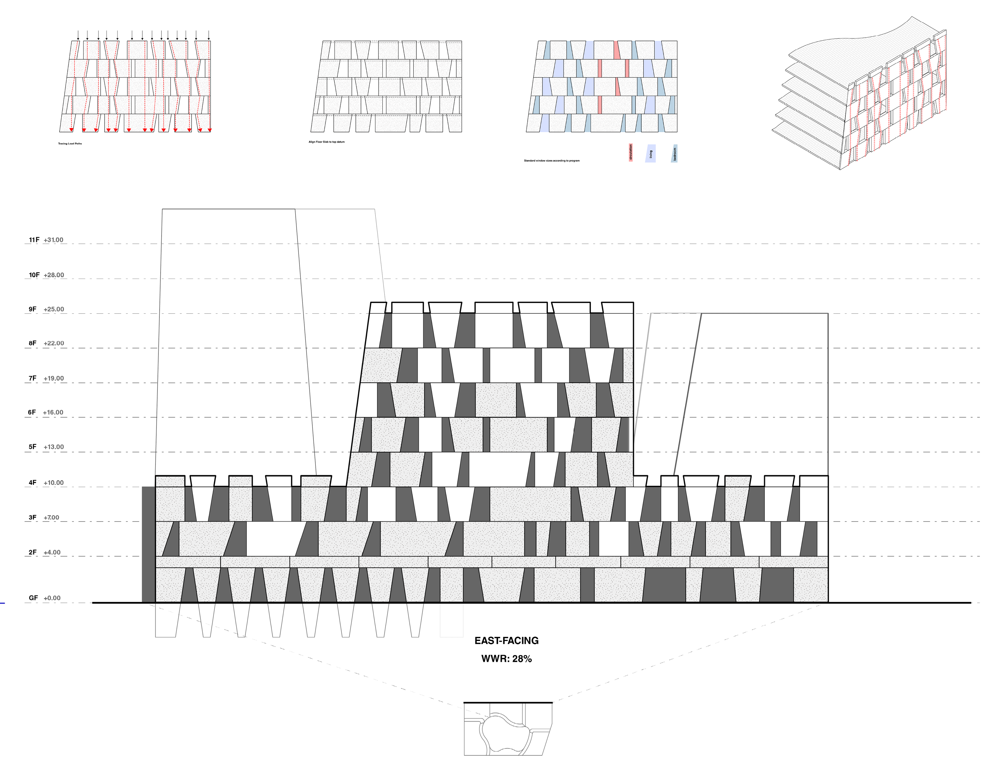
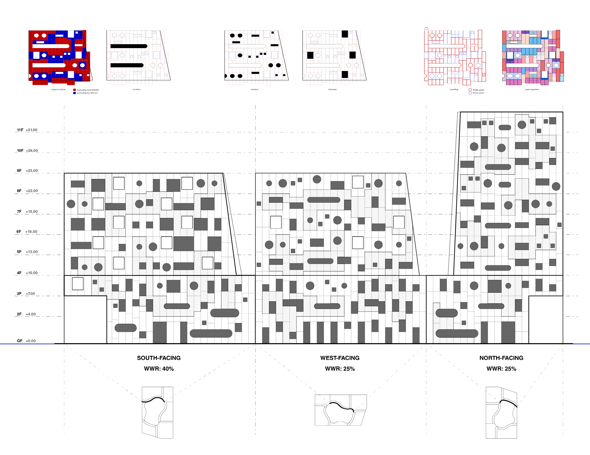
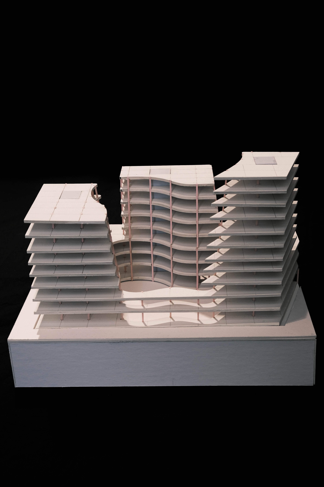

Familiar Faces, Making Traces
title
Familiar Faces, Making Traces
course
MARC 2 Comprehensive Studio
collaborators
Sharon Lam
supervisor
James Macgillivray
awards
Professor Jeffery A. Stinson Graduate Student Endowment Fund Award
category
spaces
+ Project Description
"Each house will have a memory; the characteristics and personalities of different human individuals can be written in the thickness of the walls." - Christopher Alexander
The city is an anonymous sea of faces. How can we resist anonymous, detached habitations, to ones that bear traces of our individual desires; ones that are familiar?
The community fire
The new West Neighbourhood house traces the footprint of the existing building, retaining the courtyard, while extending its height to 12 storeys. Contrasting the isolated figures in the city, the new west neighbourhood house is composed of three figures, tied together by a shared void. The void is a fulcrum that every room tessellates around, supporting spontaneous interaction, passive recognition, and the creation of weak ties. As smoke from Portuguese sardine grilling exits the courtyard, the new West Neighbourhood House positions itself as the community fire.
Local material rooted in place
The project is built of granite and transitions to a lighter limestone facade on the upper levels, mirroring a sectional reading of Ontario’s geological landscape. Marks of the stone, such as the notches of split granite, or embedded sea creatures, become distinct tactile qualities of one’s dwelling. Over time, the stone bears the marks of the inhabitants, but also rain, sun and snow, becoming a material witness to time and memory.
Dual expressions
The architecture explores the dual expression of stone through its two contrasting facades. The outer facade, facing the city, is built in structural stone, evoking permanence; the curved facade, looking inward to the courtyard, is clad in stone veneer, allowing for playful fenestration compositions.













